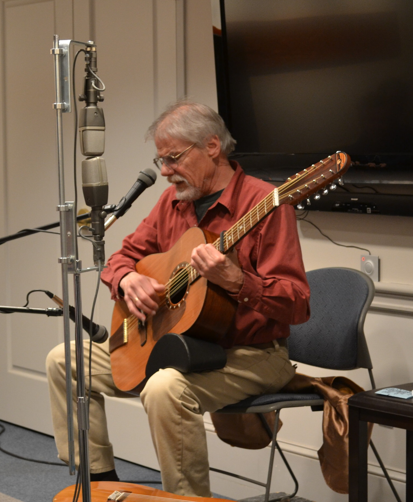

 Gordon is available for concerts and workshops on a limited basis.
Contact Kathy Pease at 207-236-2707 or email music.timberhead[at]gmail.com. please email for a current, hi-res press photo
Timberhead Music office is open Mondays and Thursdays 10 am - 4 pm EST.